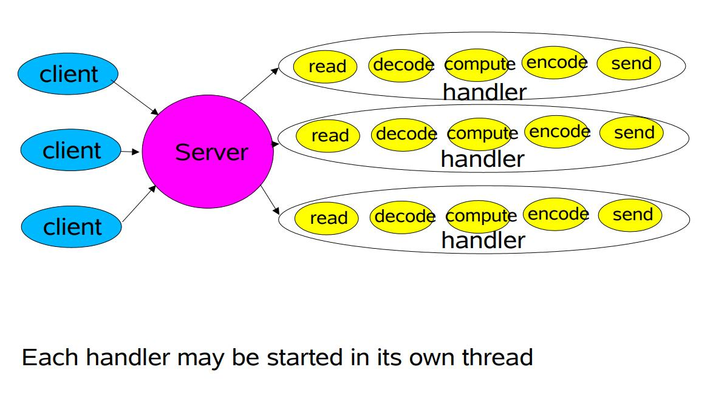
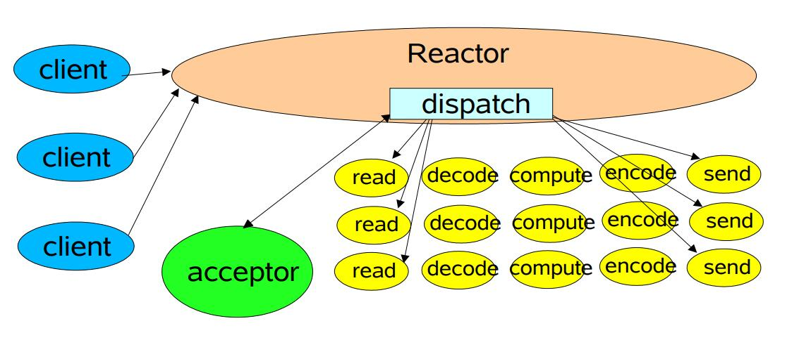
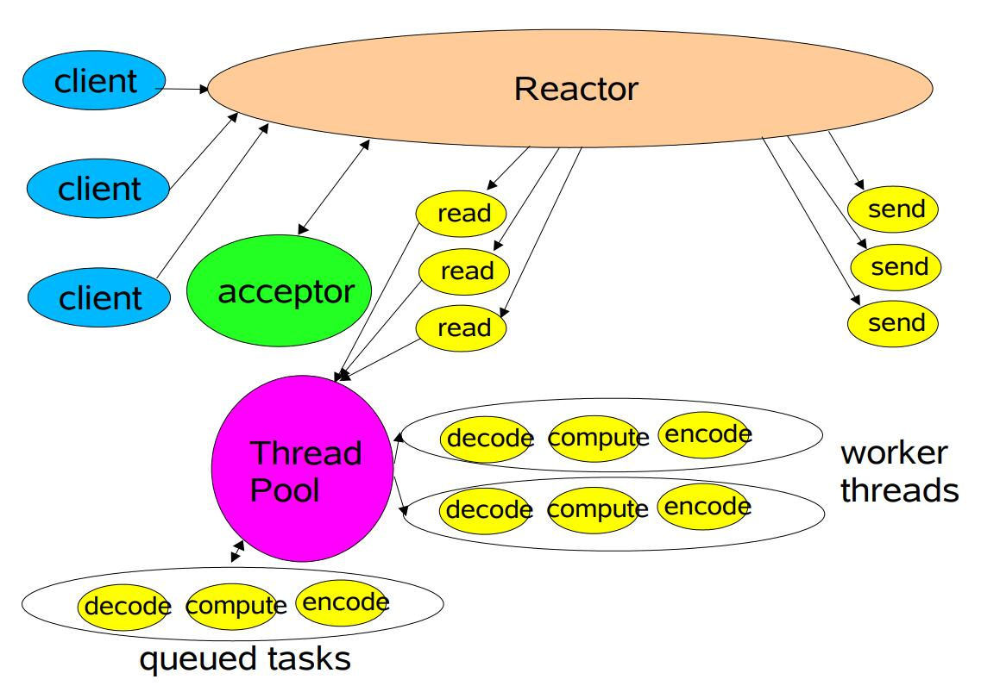
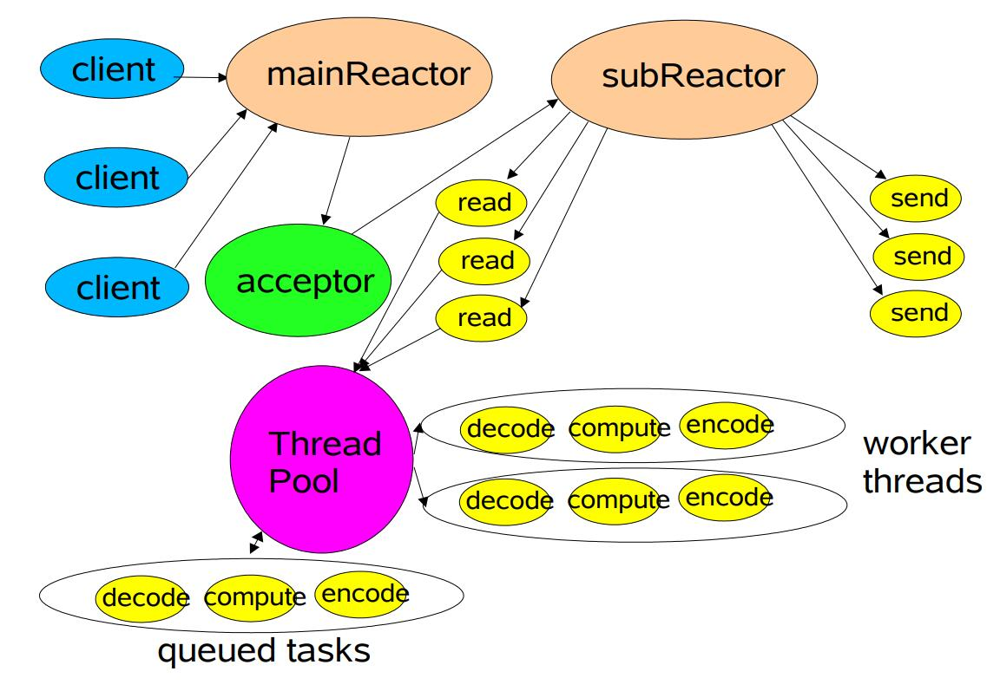

要学Netty，得先从IO模型入手，一点点来。从Unix系统的5个IO模型，JDK的3种IO模型，Reactor模式的3种实现，最后到Netty事件模型的3种实现。
本文主要搞清楚什么是Reactor模式？为什么要有Reactor模式？以及Reactor模式具体的3种实现方式是什么样的？
什么是Reactor模式？
Wiki上Reactor模式的描述
The reactor design pattern is an event handling pattern for handling service requests delivered concurrently to a service handler by one or more inputs.
The service handler then demultiplexes the incoming requests and dispatches them synchronously to the associated request handlers.
- Reactor核心重点是：有多路复用的组件来支持并发，事件驱动，并且不同事件有对应的处理器；
- Reactor模式本质是Unix系统5种I/O模型中的I/O复用(multiplexing)模型；
JUC作者Doug Lea 在 《Scalable IO in Java 》中的介绍，Reacotr模型主要分为3个角色:
- Reactor：把IO事件分配给对应的Handler处理
- Acceptor：处理客户端连接事件
- Handler：处理非阻塞的任务
另外注意Reactor这个名词用到的地方比较多：
- Spring5的Reactor 反应式编程；
- Node.js中用到的设计模式-Reactor Pattern（反应器模式）;
- Netty中的ReactorI/O模型；
我们这儿说的Reactor是指后面的2个相关，I/O事件模型相关的，和反应式编程不是一回事；
为什么有Reactor模式？

Reactor模式的出现原因要结合Unix系统的5个IO模型中提到的阻塞IO来说
传统的阻塞IO模型的不足
- 每个连接都需要独立线程处理，但线程数受系统现在数多，所以
并发能力有限，资源利用率低； - 采用阻塞IO模型，连接建立后，若当前线程没有数据可读，线程会阻塞在读操作上，造成
资源浪费；
针对传统阻塞IO模型的两个问题，可以采用如下的方案进行优化
- 基于
池化思想，避免为每个连接创建线程，连接完成后将业务处理交给线程池处理； - 基于
IO复用模型，多个连接共用同一个阻塞对象，不用等待所有的连接。遍历到有新数据可以处理时，操作系统会通知程序，线程跳出阻塞状态，进行业务逻辑处理；
Reactor线程模型的思想就是基于IO复用和线程池的结合体；
一般一个网络请求的数据处理过程包含：accept、read、decode、compute、encode、send；
按照分而治之的思想，可以将accept，read，send按需设计成独立的模块，decode、compute、encode内聚性比较强，可以作为数据处理单元用池化的思路来并行处理；
下面3种reactor模式就是不同拆分级别的优化；
Reactor模式的3种实现
单Reactor单线程

这种模型在Reactor中处理事件，并分发事件，如果是连接事件交给acceptor处理，如果是读写事件和业务处理就交给handler处理，但始终只有1个线程执行所有的事情；
单Reactor单线程模型的不足
- 仅用1个线程处理请求，浪费多核机器的CPU资源；
- 单线程处理所有的读写任务，当线程负载过高后，处理速度下降，事件会堆积，严重的会超时，可能导致客户端重新发送请求，性能越来越差；
- 单线程会有可靠性的问题；
针对上面的种种不足，就有了下面的单Reactor多线程模型：
服务员解释Reactor：一个人既当接待员又做服务员，适合客流量少的场景；
单Reactor多线程

与单Reactor单线程相比，新增了池化手段，也就是Reactor线程只处理accept,read,send事件，耗资源的业务处理（decode、compute、encode）交给线程池处理，充分利用多核机器的资源、提高性能并且增加可靠性；
单Reactor多线程模型的不足：
Reactor线程承担所有的事件，例如监听和响应，高并发场景下单线程存在性能问题；
服务员解释Reactor：1个接待员，n个服务员，适合中等流量的场景；
多Reactor多线程

与单Reactord多线程相比，把Reactor线程拆分了mainReactor和subReactor两个部分，mainReactor只处理连接事件（accept），读写事件（read,send）交给subReactor来处理。业务逻辑还是由线程池来处理；
- mainRactor只处理连接事件，用一个线程来处理就好；
- 处理读写事件的subReactor个数一般和CPU数量相等，一个subReactor对应一个线程；
- 耗资源的业务逻辑由线程池处理；
这种模型使各个模块职责单一，耦合度低，性能和稳定性都有提高；
这种模型在许多项目中广泛应用，比如Netty的主从线程模型等；
服务员解释Reactor：n个接待员，n个服务员，适合高并发流量的场景；